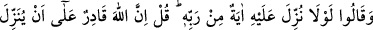
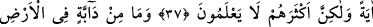
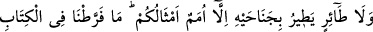
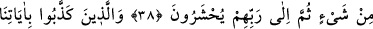
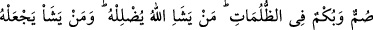
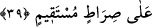

MÜŞRİKLERİN İNATLA
MÛCİZE TALEBİ
37. O’na Rabbinden bir mûcize indirilseydi ya! dediler. De ki: Şüphesiz Allah
mûcize indirmeye kadirdir. Fakat onların çoğu bilmezler.
38. Yeryüzünde yürüyen hayvanlar ve (gökyüzünde) iki kanadıyla uçan kuşlardan
ne varsa hepsi ancak sizin gibi topluluklardır. Biz o kitapta hiçbir şeyi eksik
bırakmadık. Nihayet (hepsi) toplanıp Rablerinin huzuruna getirilecekler.
39. Âyetlerimizi yalanlayanlar karanlıklar içinde kalmış sağır ve dilsizlerdir. Allah
kimi dilerse onu şaşırtır, dilediği kimseyi de doğru yola iletir.
Kureyş ileri gelenleri “Dediler ki: “O’na Rabb’inden” deve, asâ ve sofra gibi îman
etmeye sebep olacak harikulade “bir mucize indirmeli değil miydi?” indirilseydi ya!...
İşte buna karşılık olarak Allah Teâlâ da buyurdu ki: Ya Muhammed! Sen Onlara “de
ki: “Şüphesiz Allah” onların istediği gibi “bir mucize indirmeye kadirdir, fakat
çokları” böyle bir mucizeyi yalanladıkları takdirde kendilerinin helakini
gerektireceğini “bilmezler.”
Bil ki, insanlar dinlerine göre dört kısımdır:
1. Saadet elbisesi giyen nefsi ve ruhu ile saîd (mutlu) olan peygamberler ve itâatkar
mü’minlerdir.
2. Şekavet elbisesi giyen, nefsi de şakî olan. Kafirler ve büyük günahlarda ısrar
edenlerdir.
3. Saadet elbisesi giyip nefsi şakî olan. Bel’am b. Baûra, Bersisa, İblis ve
benzerleridir.
4. Şakâvet elbisesi giymiş ancak nefsi saadet ehlinden olanlar. Bunlar Bilal, Suheyb,
Selman (r.anhüm)’ün kölelik zamanları gibi. Daha sonra onların elbisesi hidayet ve
takva elbisesi ile değiştirilmiştir.
Dersen ki: Allah Teâlâ’nın mahlukatı saîd (hoşbaht) ve şakî (bedbaht) olarak